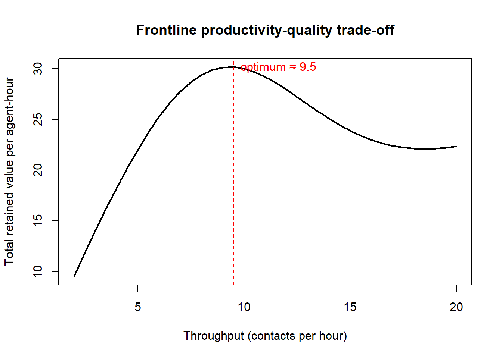

flowchart LR A[Intangibility] --> A1[No pre-purchase inspection<br/>→ infer quality from cues] B[Inseparability] --> B1[Production = consumption<br/>→ the service encounter] C[Heterogeneity] --> C1[Performance varies<br/>→ manage the distribution] D[Perishability] --> D1[Capacity cannot be stored<br/>→ match demand to supply] A1 --> Q[Service quality<br/>and satisfaction] B1 --> Q C1 --> Q D1 --> Q
21 Services Marketing
A service is a performance rather than a possession: an act, deed, or performance that one party renders to another, the benefit of which is largely intangible and consumed as it is produced. Where a manufactured good is a noun—a discrete object that can be inventoried, inspected, and returned—a service is a verb, an event that exists only in the interval during which it is delivered. This ontological difference is not a curiosity. It reorganizes the entire marketing problem: there is no shelf to merchandise, no package to design, no unit to recall, and often no way for the customer to evaluate quality until the performance is already underway. The economically dominant share of advanced economies is now organized around exactly these intangible performances, which makes the management of service quality, frontline labor, and customer satisfaction a central rather than a peripheral concern for marketing.
This chapter develops services marketing as a coherent theory rather than a list of tactics. We begin with the four properties—intangibility, inseparability, heterogeneity, perishability—that distinguish services from goods, and show how each property maps onto a specific managerial difficulty and a specific measurement problem. From there we build the central construct of the field, service quality, formalize its leading operationalization (the gaps model and the SERVQUAL instrument), and confront the measurement controversy—difference scores versus perceptions-only—on its own statistical terms. We then connect quality to profit through the service-profit chain, a causal cascade running from internal employee conditions to external customer outcomes to firm value, and we treat the frontline employee as the load-bearing node in that chain. Because services fail in real time and in front of the customer, we give service recovery and the recovery paradox a formal treatment, and we close with satisfaction in services, where the expectation–disconfirmation paradigm supplies both the dominant theory and the dominant national measurement infrastructure.
Throughout, the reader should keep one structural fact in view: in a service, the product and the marketing are frequently the same act, performed by the same employee, in the same moment. That collapse of production and consumption is the source of nearly every difficulty—and every opportunity—the chapter treats.
21.1 What Makes a Service Different
Four properties, conventionally labeled the “IHIP” characteristics, organize the classical account of why services resist the marketing apparatus built for goods. Each is best understood not as a definitional checkbox but as the root of a managerial and a measurement problem.
Intangibility. A service cannot be seen, touched, or stored before purchase. The buyer therefore cannot inspect quality ex ante and must instead infer it from tangible cues—the cleanliness of a waiting room, the credentials on a wall, the demeanor of a receptionist—and from reputation. Intangibility shifts the information problem onto the firm, which must make the invisible legible, and onto the researcher, who cannot measure a physical attribute and must instead measure a perception.
Inseparability. Production and consumption are simultaneous. A haircut is produced at the instant it is consumed; the customer is physically present in the “factory” and frequently co-produces the outcome. Inseparability means quality cannot be inspected out before it reaches the customer, that the customer’s own behavior is an input to the production function, and that the moment of contact between customer and employee—the service encounter—is where value is created or destroyed.
Heterogeneity (variability). Because services are performed by people for people, no two deliveries are identical. The same physician, the same airline, the same call center varies across employees, across customers, and across the same employee on a Monday versus a Friday. Heterogeneity is the enemy of the brand promise: a goods manufacturer can guarantee that every unit is within tolerance, whereas a service firm can only manage the distribution of an inherently stochastic performance.
Perishability. Service capacity cannot be inventoried. An airline seat that flies empty, a hotel room that sleeps no one, an hour of a consultant’s unbilled time—each is lost forever. Perishability turns capacity-and-demand matching (yield management, queuing, appointment systems) into a first-order marketing problem, because the firm cannot smooth demand shocks by drawing down stock.
These properties are ideal-typical, and modern scholarship rightly treats the goods–services boundary as a continuum rather than a dichotomy: most market offerings bundle tangible and intangible elements, and the service-dominant perspective argues that even physical goods are ultimately vehicles for service provision (Vargo and Lusch 2004). The continuum framing is older than that argument: Shostack’s case that marketing had been built on a goods model that services could not simply borrow is what first put tangibility on a scale rather than in two boxes (Shostack 1977). For the purposes of this chapter we retain the four properties as a diagnostic lens: each tells us where quality is manufactured, where it can fail, and how it must be measured. Figure 21.1 maps each property to the managerial problem it creates.
21.2 Theoretical Foundations
The constructs developed in this chapter do not stand alone; each rests on a governing theory that explains why the phenomenon behaves as it does. Five strands organize the field.
Service-dominant (S-D) logic reframes the goods-versus-services boundary discussed above. Vargo and Lusch argue that value is not embedded in a tangible good and transferred to a passive buyer but is co-created through service exchange, with the customer an active operant resource rather than a destroyer of value (Vargo and Lusch 2004). The later, institutional statement embeds this exchange in service ecosystems coordinated by shared norms and rules (Vargo and Lusch 2016). S-D logic supplies the chapter’s premise that even physical goods are vehicles for service provision and that the service encounter is where value is jointly produced.
The gaps model and SERVQUAL give service quality its dominant operationalization. Parasuraman, Zeithaml, and Berry theorize perceived quality as the customer-facing discrepancy (Gap 5) between expected and perceived service, itself the downstream consequence of four internal provider-side gaps (Parasuraman, Zeithaml, and Berry 1985), and then supply the instrument that made the construct measurable (Parasuraman, Zeithaml, and Berry 1988). The account matters because it locates a customer outcome at the end of a chain of managerially actionable organizational deficiencies, which is exactly the structure formalized in Equation 21.2 and Section 21.3. The framework has since been ported to digital channels, where the relevant dimensions turn out to be efficiency, fulfillment, system availability, and privacy rather than the original five (Parasuraman, Zeithaml, and Malhotra 2005; Collier and Bienstock 2006).
A parallel European tradition, developed independently and earlier, decomposes perceived quality not into five dimensions but into two: the technical quality of what the customer receives and the functional quality of how it is delivered, with corporate image mediating between them (Grönroos 1984). The distinction is worth keeping in view because it makes explicit something SERVQUAL leaves implicit: most of the variance managers can act on lies in the process, not the outcome.
Justice (equity) theory explains service recovery. Customers evaluate a firm’s response to failure as an exchange judged for fairness, decomposed into distributive, procedural, and interactional justice (Tax, Brown, and Chandrashekaran 1998). This equity lens accounts for the recovery paradox of Section 21.6: a recovery that restores perceived fairness across all three dimensions can lift satisfaction above the no-failure baseline, with the interactional (human, empathetic) component frequently carrying the largest weight — a pattern the complaint-handling meta-analysis confirms across studies (Gelbrich and Roschk 2010). The affective side matters as much as the procedural one: anger and helplessness after a failure produce different coping responses and call for different recoveries (Gelbrich 2009).
Role theory accounts for the frontline employee of Section 21.5. The boundary-spanning agent occupies a role defined by two principals (the organization and the customer) whose conflicting expectations generate role conflict and role ambiguity, the structural source of the emotional labor and burnout that degrade delivered quality (Babin and Boles 1998). Role theory is why the frontline is simultaneously the product and the principal source of quality variance; it also explains why customer orientation raises performance only under some conditions (Zablah et al. 2012), and why the employee’s identification with the organization — not merely their satisfaction — is what propagates through the chain (Homburg, Wieseke, and Hoyer 2009; Bell and Menguc 2002).
The critical-incident tradition is the empirical method that made the encounter studyable. Bitner, Booms, and Tetreault (1990) collected several hundred incidents customers themselves nominated as memorably satisfying or dissatisfying and sorted them into three groups: employee responses to delivery-system failures, responses to customer needs and requests, and unprompted employee actions. The finding that reorganized the field is that the same underlying failure appears in both the satisfying and the dissatisfying pile — what separates them is the response, not the incident. That result is the empirical warrant for treating recovery (Section 21.6) as a first-class capability rather than as damage control.
The servicescape supplies the physical half of the account. Because a service has no package, the built environment does the work packaging does elsewhere: it sets expectations before the encounter, shapes behaviour during it, and constrains what the frontline can deliver. Bitner (1992) organizes the environment into ambient conditions, spatial layout and functionality, and signs and symbols, and — importantly for the role-theoretic argument above — treats employees and customers as both responding to it. The empirical literature has since specified the cues. Music and scent interact rather than add: congruent pairings lift evaluations while incongruent ones depress them below either cue alone (Mattila and Wirtz 2001), and the same holds for the auditory environment more broadly, where the pitch and loudness of retail sound shift food choice toward or away from healthy options (Biswas, Lund, and Szocs 2018). Excitement generated by the environment translates into dwell time and repatronage rather than into immediate spend (Wakefield and Baker 1998), and cues are read jointly rather than separately, so a single upgraded element in an otherwise downmarket environment does little (Baker et al. 2002). Convenience is the dimension of the environment that customers themselves most often name, and it decomposes into decision, access, transaction, benefit, and post-benefit convenience — each with a different remedy (Berry, Seiders, and Grewal 2002).
Co-creation and customer participation is the newest strand, and the one that complicates the others. If the customer is an operant resource, the customer is also a source of quality variance the firm does not control. Participation raises value but simultaneously raises the customer’s own contribution to failure, making it a genuine double-edged sword (Chan, Yim, and Lam 2010); the effort customers themselves expend is a cost that must appear on the value ledger (Sweeney, Danaher, and McColl-Kennedy 2015). Co-production has been shown to raise loyalty in financial services (Auh et al. 2007), and the practice-style taxonomy developed in health care shows how differently customers occupy the same co-creation role (McColl-Kennedy et al. 2012).
Expectation-disconfirmation is the theoretical engine of satisfaction. As formalized in Section 21.7, satisfaction arises from the comparison of perceived performance against a prior expectation, driven principally by the disconfirmation between the two (Oliver and Burke 1999). Its kinship to the SERVQUAL gap is not incidental: both are performance-minus-expectation differences, so both inherit the difference-score liabilities treated in Section 21.3.2.
21.3 Service Quality and the Gaps Model
The central construct of services marketing is perceived service quality: the customer’s global judgment of the superiority or excellence of a service. It is explicitly an attitude—relatively enduring, evaluative, and distinct from the transaction-specific affect of satisfaction (a distinction we sharpen in Section 21.7). The dominant theoretical apparatus, due to Parasuraman, Zeithaml, and Berry, frames quality as the resolution of a chain of internal organizational gaps that culminate in a single external gap between what the customer expected and what the customer perceived they received. (Parasuraman, Zeithaml, and Berry 1985)
Service quality, as perceived by the customer, is the discrepancy between the customer’s expectations of what a firm should offer and their perceptions of the firm’s actual performance. Quality is high when perceptions meet or exceed expectations and low when they fall short.
The power of the formulation is that it locates a customer-facing outcome (the perception–expectation discrepancy) at the end of a causal chain of internal deficiencies management can act on. The model identifies five gaps, summarized in Table 21.1.
| Gap | Located between | Managerial reading |
|---|---|---|
| 1 | Customer expectations and management’s perception of them | The firm does not know what customers expect |
| 2 | Management perceptions and service quality specifications | The firm knows but cannot codify expectations into standards |
| 3 | Specifications and actual service delivery | Standards exist but the frontline does not meet them |
| 4 | Service delivery and external communications | Promises (advertising, sales) overstate delivery |
| 5 | Expected service and perceived service | The customer-facing gap—a function of Gaps 1–4 |
Formally, write \(E_{ij}\) for customer \(i\)’s expectation on quality attribute \(j\) and \(P_{ij}\) for the same customer’s perception of delivered performance. The customer-facing Gap 5 for attribute \(j\) is
\[ G_{ij}^{(5)} = P_{ij} - E_{ij}, \tag{21.1}\]
and overall perceived quality aggregates the attribute-level gaps, optionally weighting each attribute \(j\) by its importance \(w_{ij}\) (with \(\sum_j w_{ij}=1\)):
\[ \text{SQ}_i = \sum_{j=1}^{J} w_{ij}\,\big(P_{ij} - E_{ij}\big). \tag{21.2}\]
A nonnegative \(G_{ij}^{(5)}\) indicates met-or-exceeded expectations on attribute \(j\); the model’s substantive claim is that this final gap is driven by the provider-side Gaps 1–4, so that management improves perceived quality by closing internal deficiencies rather than by exhorting customers to lower expectations. Figure 21.2 traces this chain from the four provider-side gaps to the customer-facing Gap 5.
flowchart TB
subgraph Customer
EX[Expected service] --> G5{Gap 5}
PS[Perceived service] --> G5
end
subgraph Provider
KN[Mgmt perception of<br/>customer expectations] -->|Gap 2| SP[Quality specifications]
SP -->|Gap 3| DL[Service delivery]
DL --> PS
DL -->|Gap 4| CM[External communications]
CM --> EX
end
EX -.->|Gap 1| KN
21.3.1 The SERVQUAL Instrument
To operationalize Equation 21.2, Parasuraman and colleagues developed SERVQUAL, a multi-item scale that measures expectations and perceptions on a battery of items that load on five dimensions. The five dimensions—reduced from an original ten through factor analysis—are conventionally summarized by the mnemonic RATER:
- Reliability — the ability to perform the promised service dependably and accurately. Empirically the most heavily weighted dimension across most contexts.
- Assurance — the knowledge and courtesy of employees and their ability to convey trust and confidence.
- Tangibles — the appearance of physical facilities, equipment, personnel, and communication materials (the visible proxies for an invisible product).
- Empathy — the caring, individualized attention the firm provides its customers.
- Responsiveness — the willingness to help customers and provide prompt service.
The instrument administers each item twice—once to elicit the expectation (“Excellent firms in this industry will have modern equipment”) and once to elicit the perception (“Firm X has modern equipment”)—on matched seven-point scales, and computes the per-item gap as their difference. Dimension scores average the item gaps within a dimension; the overall score averages across dimensions, weighted or unweighted.
21.3.2 The Difference-Score Controversy
SERVQUAL’s defining design choice—computing quality as the difference \(P-E\)—is also its most contested, and the dispute is genuinely psychometric rather than merely stylistic. The reliability of a difference score is a function of the reliabilities of its components and, crucially, the correlation between them. Let \(P\) and \(E\) have reliabilities \(\rho_{PP}\) and \(\rho_{EE}\), variances \(\sigma_P^2\) and \(\sigma_E^2\), and correlation \(\rho_{PE}\). The reliability of \(D = P - E\) is
\[ \rho_{DD} = \frac{\sigma_P^2\,\rho_{PP} + \sigma_E^2\,\rho_{EE} - 2\,\rho_{PE}\,\sigma_P \sigma_E} {\sigma_P^2 + \sigma_E^2 - 2\,\rho_{PE}\,\sigma_P \sigma_E}. \tag{21.3}\]
The pathology is visible in the algebra: when the components are themselves positively correlated (as \(P\) and \(E\) typically are—customers who expect more of excellent firms also tend to perceive more), the term \(-2\rho_{PE}\sigma_P \sigma_E\) shrinks both numerator and denominator, and the difference score’s reliability falls below that of either component. Difference scores can also suffer spurious correlation with their own components and impose a restrictive constraint—that \(P\) and \(E\) enter the quality judgment with equal and opposite unit weights—that the data need not honor. (Cronin and Taylor 1992; Peter, Churchill, and Brown 1993)
These objections motivated the SERVPERF alternative, which discards the expectation battery and measures quality from perceptions alone, \(\text{SQ}_i = \sum_j w_{ij} P_{ij}\). Perceptions-only scores frequently exhibit higher reliability and superior predictive validity for downstream outcomes such as purchase intention, and they halve respondent burden. The defense of the gaps formulation is conceptual rather than statistical: the expectation component carries diagnostic information—telling management not just that quality is low but relative to what standard—that a perceptions-only score discards. The pragmatic resolution adopted in much applied work is to measure perceptions for prediction and to retain expectations for diagnosis, treating the two instruments as serving different jobs rather than competing for the same one. The deeper lesson generalizes beyond services: whenever a construct is defined as a gap, the analyst inherits the difference-score’s measurement liabilities and must justify the equal-and-opposite-weight constraint rather than assume it (cf. the reflective-versus-formative measurement question in Chapter 11).
21.3.3 A Reproducible SERVQUAL Analysis
The following example simulates a SERVQUAL dataset, computes gap scores and dimension means, and contrasts the reliability of the difference score against the perceptions-only score—making the pathology of Equation 21.3 concrete rather than abstract.
Code
set.seed(18)
n_resp <- 400
dims <- c("Reliability", "Assurance", "Tangibles", "Empathy", "Responsiveness")
items_per_dim <- 4
# Latent per-respondent quality propensity and an expectation propensity that is
# positively correlated with it (the source of the difference-score pathology).
quality_latent <- rnorm(n_resp, 0, 1)
expect_latent <- 0.6 * quality_latent + rnorm(n_resp, 0, 0.8)
simulate_block <- function(latent, base, sd_item) {
# 7-point items: clamp a latent-driven Gaussian to [1, 7].
raw <- base + latent + rnorm(length(latent), 0, sd_item)
pmin(pmax(round(raw), 1), 7)
}
# Perceptions average ~5.0; expectations average higher (~6.0): a negative gap.
P <- sapply(seq_len(length(dims) * items_per_dim),
function(k) simulate_block(quality_latent, base = 5.0, sd_item = 0.9))
E <- sapply(seq_len(length(dims) * items_per_dim),
function(k) simulate_block(expect_latent, base = 6.0, sd_item = 0.9))
colnames(P) <- colnames(E) <-
paste0(rep(substr(dims, 1, 3), each = items_per_dim), "_",
rep(seq_len(items_per_dim), times = length(dims)))
# Per-item gap (Eq. for G^(5)) and per-dimension mean gap.
gap <- P - E
dim_index <- rep(dims, each = items_per_dim)
dim_gap <- sapply(dims, function(d) mean(gap[, dim_index == d]))
knitr::kable(
data.frame(Dimension = dims, Mean_Gap = round(dim_gap, 3)),
caption = "Mean SERVQUAL gap (Perception − Expectation) by dimension; negative values indicate unmet expectations."
)| Dimension | Mean_Gap | |
|---|---|---|
| Reliability | Reliability | -0.853 |
| Assurance | Assurance | -0.948 |
| Tangibles | Tangibles | -0.846 |
| Empathy | Empathy | -0.856 |
| Responsiveness | Responsiveness | -0.878 |
Code
# Cronbach's alpha (base R): reliability of a set of items.
cron_alpha <- function(X) {
k <- ncol(X)
total_var <- var(rowSums(X))
item_var <- sum(apply(X, 2, var))
(k / (k - 1)) * (1 - item_var / total_var)
}
alpha_perc <- cron_alpha(P) # perceptions-only (SERVPERF)
alpha_gap <- cron_alpha(gap) # difference scores (SERVQUAL)
cat("Cronbach's alpha, perceptions-only (SERVPERF):", round(alpha_perc, 3), "\n")
#> Cronbach's alpha, perceptions-only (SERVPERF): 0.958
cat("Cronbach's alpha, difference scores (SERVQUAL):", round(alpha_gap, 3), "\n")
#> Cronbach's alpha, difference scores (SERVQUAL): 0.903The perceptions-only scale typically returns the higher reliability, exactly as Equation 21.3 predicts when expectations and perceptions are positively correlated. This is the empirical core of the SERVPERF critique, reproduced from first principles.
21.4 The Service-Profit Chain
Service quality is not pursued for its own sake; the managerial interest is in its consequences for profit. The service-profit chain supplies the causal scaffolding linking the two. In its canonical form it is a cascade: internal service quality drives employee satisfaction; satisfied employees are more loyal and more productive; their loyalty and productivity raise external service value; perceived value drives customer satisfaction; satisfied customers become loyal; and customer loyalty drives revenue growth and profitability. (Heskett et al. 1994)
Profit and growth are stimulated primarily by customer loyalty. Loyalty is a direct result of customer satisfaction. Satisfaction is largely influenced by the value of services provided to customers. Value is created by satisfied, loyal, and productive employees. Employee satisfaction, in turn, results primarily from high-quality internal support and policies that enable employees to deliver results to customers.
The chain is a structural claim, and it is worth writing as one. Let the latent nodes be internal quality \(I\), employee satisfaction \(S^e\), external value \(V\), customer satisfaction \(S^c\), customer loyalty \(L\), and profit \(\pi\). The recursive system is
\[ \begin{aligned} S^e &= \beta_1 I + \varepsilon_1, \\ V &= \beta_2 S^e + \varepsilon_2, \\ S^c &= \beta_3 V + \varepsilon_3, \\ L &= \beta_4 S^c + \varepsilon_4, \\ \pi &= \beta_5 L + \varepsilon_5, \end{aligned} \tag{21.4}\]
so that the total effect of internal service quality on profit is the product of the path coefficients, \(\partial \pi / \partial I = \prod_{k=1}^{5}\beta_k\), under the recursive (no-feedback, uncorrelated-error) assumptions that make this a valid structural decomposition. Two features deserve emphasis. First, the chain is multiplicative: a weak link anywhere collapses the whole, which is why a firm with excellent customer-facing processes but demoralized employees realizes little profit gain. Second, the links are not mechanical identities but estimated empirical relationships, several of which are nonlinear—the satisfaction–loyalty link in particular is famously sigmoid, with loyalty unresponsive in a broad zone of mere satisfaction and rising sharply only at the top of the scale.
The chain’s own links repay separate attention. The employee end is where social identity does the work: employees who identify with the organization transmit that identification to customers, which is a sharper mechanism than employee satisfaction alone (Homburg, Wieseke, and Hoyer 2009). The customer end is where the financial return is finally realized, and the return-on-quality tradition insists that quality spending be evaluated like any other investment, with a defensible link from a quality improvement to a cash flow (Rust, Zahorik, and Keiningham 1995). Between them, satisfaction converts to retention only in the presence of commitment and in the absence of triggers that dislodge an otherwise satisfied customer (Gustafsson, Johnson, and Roos 2005), and share of wallet is better predicted by a customer.s relative rank ordering of the brands they use than by their absolute satisfaction score (Aksoy et al. 2017), and duration models show how unevenly that conversion runs across a customer base (Bolton 1998). The chain also has a demographic texture that aggregate models hide: loyalty responds differently for women and men (Melnyk, Van Osselaer, and Bijmolt 2009), and it is built as much through intimacy and passion as through satisfaction (Yim, Tse, and Chan 2008). On the industrial side, the revenue and profit consequences of a service strategy depend on how far the firm moves along the goods–service continuum (Eggert et al. 2013), and multichannel delivery can generate dissynergies that offset the gains (Falk et al. 2007; Kleijnen, Ruyter, and Wetzels 2007).
The identification challenge is that none of these relationships is delivered causally by cross-sectional correlation. Satisfied customers may be more loyal, or loyal customers may report more satisfaction (reverse causality); a common unobserved cause—say, a customer’s baseline disposition—may inflate every link (omitted-variable bias); and firms that invest in employees may differ systematically in ways the chain does not model (selection). Credible estimates of the chain therefore lean on within-unit variation (employee–customer matched panels, store fixed effects) or on exogenous shocks to one link, and the recursive structure of Equation 21.4 should be read as a maintained modeling assumption, not an established fact. Figure 21.3 lays out the chain link by link, from internal service quality to profit.
flowchart LR I[Internal service<br/>quality] -->|β1| Se[Employee<br/>satisfaction] Se -->|β2| V[External service<br/>value] V -->|β3| Sc[Customer<br/>satisfaction] Sc -->|β4| L[Customer<br/>loyalty] L -->|β5| Pi[Revenue growth<br/>and profit]
The downstream end of the chain—that customer satisfaction and customer equity translate into shareholder value—is now well documented in the marketing–finance literature. Aggregate customer satisfaction, as captured by national indices, is positively associated with firm cash flows, stock returns, and reduced cash-flow volatility, and satisfaction portfolios have been shown to earn abnormal returns (Fornell et al. 2006; Gruca and Rego 2005; Aksoy et al. 2008). Customer satisfaction and customer-based assets thus belong squarely within the marketing-as-investment frame developed in Chapter 24, and the service-profit chain is the micro-mechanism that connects frontline practice to that firm-level payoff.
21.5 Frontline Employees and the Service Encounter
The pivotal node in the service-profit chain is the frontline employee—the person who actually performs the service in the customer’s presence. Because of inseparability, this employee is the product at the moment of contact, and because of heterogeneity, this employee is the principal source of quality variance. The encounter between frontline employee and customer is therefore the “moment of truth” where the firm’s strategy is either realized or undone.
Three structural features make the frontline role distinctive and difficult. First, the frontline employee occupies a boundary-spanning position, standing simultaneously inside the firm and at its edge, and is subject to two principals whose interests routinely conflict: the organization, which presses for efficiency and compliance, and the customer, who presses for responsiveness and accommodation. This conflict is the structural source of emotional labor—the effort of displaying organizationally desired emotions regardless of felt emotion—whose chronic exercise (surface acting in particular) predicts emotional exhaustion and burnout. (Hochschild 1983; Singh 2000)
Second, the frontline is the locus of internal marketing: the proposition, embedded in the left links of Equation 21.4, that employees are an internal market whose satisfaction, training, and empowerment must be managed as deliberately as the external customer’s. Empowerment—granting frontline staff discretion to resolve problems without escalation—shortens recovery time and raises satisfaction, but it trades off against consistency and cost, so the optimal degree of discretion is an interior solution, not a maximum.
Third, the frontline increasingly works alongside algorithmic and automated systems rather than in isolation. Service is being reorganized around customer self-service technologies, conversational agents, and AI-assisted human agents, which shifts the human role toward the complex, emotional, and exception-handling encounters that automation handles poorly, and raises new questions about how customers respond to non-human service providers and to disclosed automation. The displacement is not uniform: the tasks automation takes first are the mechanical and analytical ones, leaving the empathetic core to human agents, which is the central prediction of the intelligence-hierarchy account of AI in service (Huang and Rust 2018; Rust and Huang 2014). Whether that prediction holds depends on how customers actually react. Humanoid service robots reduce willingness to use a service when they trigger discomfort with human likeness (Doorn et al. 2016; Mende et al. 2019), anthropomorphic cues cut both ways across a large body of studies (Blut et al. 2021), and a robot’s error is forgiven differently from a human’s (Choi, Mattila, and Bolton 2020). The choice among delivery modes — human, self-service, or hybrid — is itself an investigable design decision rather than a technology default (Meuter et al. 2005, 2000), and augmented-reality and imagination-transfer tools now extend it further into the retail frontline (Heller et al. 2019; Hilken et al. 2017). Recent frontline scholarship documents how engaged frontline employees and well-designed human–technology configurations propagate through to customer outcomes and firm performance (Harmeling et al. 2016; Umashankar, Bahadir, and Bharadwaj 2021; Neumann, Tucker, and Whitfield 2019; Homburg and Wielgos 2022). Whether the automation announces itself is itself a design variable with measurable consequences: in a field experiment on voice-chatbot design, Xu, Dai, and Yan (2026) show that disclosing the agent’s non-human identity and calibrating its human-like cues shift customer engagement and compliance within the encounter, with knock-on consequences for handling and escalation rates (Dai and Swaminathan 2026)—so identity disclosure is a service-design and capacity decision, not merely a compliance formality. The substantive point for this chapter is that automation does not remove the frontline from the service-profit chain; it relocates the human contribution to precisely the encounters—recovery, empathy, ambiguity—where the chain’s coefficients are largest.
21.5.1 Productivity and Quality at the Frontline
A recurring tension in frontline management is the trade-off between productivity (throughput per unit labor) and quality (the perceived excellence of each encounter). Pushing an agent to handle more contacts per hour mechanically reduces the time available per contact, which—beyond a point—degrades perceived empathy and responsiveness. This is also where the operational allocation of customers to service channels becomes strategic: Sun and Shibo (2011) model service- channel allocation (for example, onshore versus offshore routing) as a dynamic programming problem in which the firm learns customer preferences and balances the immediate cost of service against the long-run retention consequences of where and how a customer is served. Their central insight—that myopic cost-minimization in routing can destroy long-horizon customer value—is the frontline analogue of the service-profit chain’s multiplicative structure: squeezing one link for short-run efficiency can collapse the chain’s downstream payoff.
Code
set.seed(181)
# A stylized productivity-quality frontier at the agent level. Quality is a
# concave-decreasing function of throughput (contacts handled per hour); retained
# value per customer rises with quality. The firm chooses throughput to maximize
# total value = throughput * value_per_customer.
throughput <- seq(2, 20, by = 0.5) # contacts per hour
quality <- 100 / (1 + exp(0.35 * (throughput - 10))) # logistic decay in [~0,100]
value_per_customer <- 1 + 0.04 * quality # retained value scales with quality
total_value <- throughput * value_per_customer
opt <- throughput[which.max(total_value)]
plot(throughput, total_value, type = "l", lwd = 2,
xlab = "Throughput (contacts per hour)",
ylab = "Total retained value per agent-hour",
main = "Frontline productivity-quality trade-off")
abline(v = opt, lty = 2, col = "red")
text(opt, max(total_value), labels = paste0("optimum ≈ ", opt), pos = 4, col = "red")
The figure makes the interior optimum explicit: total value is maximized at a moderate throughput, neither at the productivity-maximizing extreme (where quality collapses) nor at the quality-maximizing extreme (where too few customers are served). The exact location of the optimum depends on how steeply quality decays with throughput and how strongly retained value responds to quality—both estimable from matched agent–customer data.
AI assistance enters this diagram as a shift in the frontier itself, and the best field evidence says the shift is heterogeneous rather than uniform. Brynjolfsson, Li, and Raymond (2025) study the staged rollout of a generative-AI conversational assistant to more than five thousand customer-support agents and find an average productivity gain of roughly 15%, concentrated almost entirely among novice and lower-skilled agents; the most experienced agents gain little, and on some quality margins do slightly worse. The mechanism is diffusion of tacit knowledge: the assistant, trained on the behavior of high performers, transmits their scripts and recovery moves to agents who had not yet learned them, which compresses the quality variance that heterogeneity (Section 21.1) makes endemic to services. Two implications follow for the frontier above. First, the value of assistance is largest where baseline quality dispersion is largest, so the return on deployment depends on the composition of the workforce rather than on the tool. Second, an assistant that raises attainable throughput at a given quality level moves the optimum rightward but does not abolish the trade-off, and a firm that banks the entire gain as headcount reduction rather than as quality will slide back down the same curve. The complementarity is the operative concept: AI expands the feasible set, while workflow design, monitoring, and the supervisory capacity developed in Section 67.11.2 determine which points in it are actually reachable (Dai and Swaminathan 2026).
A second mechanism shifts the same frontier, and it is cheaper than either headcount or a model. Espinosa, Kim, and Prada (2026) study a hospital emergency department that installed a display showing when laboratory results became available—no new information, no change in any signal’s content, only a shorter delay between a result existing and the physician seeing it. Across 64,152 decisions by 387 physicians, the intervention cut test charges by 25%, shortened patient length of stay by 13% (about 75 minutes), lowered hospitalization rates, and raised patient satisfaction, with the largest gains under high workload and in less common cases. Throughput and quality moved together, which the frontier above appears to forbid.
The resolution is that latency is a property of the frontier, not a point on it. When information arrives slowly, the server must commit to a bundle of diagnostic steps before any of them reports; when it arrives quickly, the same server can act sequentially, buying the second signal only if the first left the case unresolved. Sequential acquisition weakly dominates the batch, so a unit of attention now conditions on more, and the whole curve moves out. Two consequences for service design follow. First, workload moderates the return: the value of releasing attention early rises with the queue, which is precisely when a productivity push along the old frontier would have destroyed quality. Second, the evaluation standard is strict—the study’s identifying move is a pure timing intervention with information content held fixed, and a service-technology evaluation that changes what agents can see and how fast they see it cannot say which margin paid. The same discipline applies to routing systems, agent-assist tools, and real-time dashboards; the healthcare context and its decision structure are developed in Section 22.8.
21.6 Service Failure and Recovery
Because services are produced in real time by variable humans, they fail visibly and often. Service recovery is the set of actions a firm takes in response to a service failure, and it is consequential precisely because the failure occurs in front of the customer, with no opportunity to inspect the defect out beforehand. The strategic interest in recovery rests on a striking empirical regularity: a well-handled failure can leave the customer more satisfied and more loyal than if no failure had occurred at all. This is the service recovery paradox.
Let \(S_0\) denote the satisfaction of a customer who experiences flawless service, \(S_f\) the satisfaction of a customer who experiences a failure followed by recovery effort, and \(r \in [0,1]\) the quality of recovery (with \(r=0\) no recovery and \(r=1\) ideal recovery). The recovery paradox is the claim that there exists a threshold \(r^\ast\) such that
\[ S_f(r) > S_0 \quad \text{for } r > r^\ast, \tag{21.5}\]
i.e., sufficiently excellent recovery overshoots the no-failure baseline. The mechanism is twofold. First, a failure converts a routine, low-attention transaction into a diagnostic episode in which the firm’s responsiveness, fairness, and competence are vividly displayed; a strong recovery supplies positive evidence that flawless service never had the chance to provide. Second, customers evaluate recovery through the lens of perceived justice, which decomposes into three components: distributive justice (the tangible outcome—refund, replacement, credit—relative to the harm), procedural justice (the fairness, speed, and convenience of the recovery process), and interactional justice (the courtesy, empathy, and respect with which the customer is treated during the process). Recovery satisfaction rises in all three, and interactional justice—the human, empathetic dimension—frequently carries the largest weight, which again routes the firm’s recovery capability back to the frontline employee of Section 21.5. The meta-analytic evidence on complaint handling puts numbers on that ordering across studies (Gelbrich and Roschk 2010), and the early evidence that complaint experiences carry relationship consequences well beyond the episode itself is what pulled recovery into the relationship-marketing agenda in the first place (Tax, Brown, and Chandrashekaran 1998).
It is also a mistake to treat recovery as a single act. The customer moves through a journey — pre-recovery expectations, the recovery encounter, and the post-recovery period in which the relationship is re-evaluated — and the firm’s effectiveness at one stage does not substitute for failure at another (Van Vaerenbergh et al. 2018). Longitudinal evidence on complaining customers shows the evaluation continuing to move for months after the episode closes (Maxham and Netemeyer 2002). The tail can be much longer and much worse than that: Grégoire, Tripp, and Legoux (2009) trace customers whose strong prior relationship with a firm converts, after a betrayal, into sustained desire for revenge and avoidance that outlasts the relationships of customers who never cared much — so relationship strength is an asset that becomes a liability at exactly the moment recovery matters most.
The paradox must be stated with two caveats, because managers routinely overread it. First, it is fragile: the meta-analytic evidence indicates the post-recovery satisfaction premium materializes only when recovery is genuinely excellent, when the failure is not severe, and rarely on repeated failures—a customer forgives the first lapse but not the pattern. Second, it is never a strategy: deliberately failing in order to recover spectacularly is dominated by not failing, because recovery is costly, the threshold \(r^\ast\) is high, and severe or repeated failures push the relationship below baseline. The correct reading of Equation 21.5 is defensive—recovery can convert an inevitable failure into a retention opportunity—not offensive.
Code
set.seed(1812)
# Simulate post-episode satisfaction as a function of recovery quality and
# failure severity, illustrating the recovery-paradox threshold.
n <- 1500
recovery_quality <- runif(n, 0, 1) # r in [0,1]
failure_severity <- runif(n, 0, 1) # 0 = minor, 1 = severe
baseline_no_failure <- 7.5 # S_0 on a 10-point scale
# Recovery lifts satisfaction; severity drags it down; interaction: severe
# failures are harder to fully recover from.
satisfaction <- 4.0 +
5.0 * recovery_quality -
3.0 * failure_severity -
2.0 * recovery_quality * failure_severity +
rnorm(n, 0, 0.6)
satisfaction <- pmin(pmax(satisfaction, 0), 10)
paradox <- satisfaction > baseline_no_failure # exceeds the no-failure baseline
# Among MINOR failures, what recovery quality is needed to clear the baseline?
minor <- failure_severity < 0.25
fit <- lm(satisfaction ~ recovery_quality, data = data.frame(satisfaction, recovery_quality)[minor, ])
r_star <- (baseline_no_failure - coef(fit)[1]) / coef(fit)[2]
cat("Share of recovered customers exceeding no-failure baseline:",
round(mean(paradox), 3), "\n")
#> Share of recovered customers exceeding no-failure baseline: 0.051
cat("Approx. recovery threshold r* (minor failures):", round(r_star, 3), "\n")
#> Approx. recovery threshold r* (minor failures): 0.811The simulation reproduces the paradox’s qualitative shape: a sizeable share of minor-failure customers who receive high-quality recovery end up above the no-failure baseline, while severe failures rarely clear it regardless of recovery effort—the empirical content of the caveats above.
21.7 Satisfaction in Services
Customer satisfaction is the post-consumption evaluative judgment concerning a specific transaction or a cumulative relationship. The dominant theory is the expectation–disconfirmation paradigm: satisfaction arises from the comparison of perceived performance against a prior comparison standard (typically expectations), and is driven principally by the disconfirmation between the two (Oliver and Burke 1999; Westbrook 1987).
Before developing the model, two framing points. The first is that satisfaction with a transaction is nested inside an experience that spans many touchpoints and accumulates over time; the determinants, dynamics, and management of that broader construct are set out in Verhoef et al. (2009) and, for the retail case specifically, in Puccinelli et al. (2009). The second is that how the elements are combined can matter more than the elements themselves: Ordanini, Parasuraman, and Rubera (2013) find that the configuration of service attributes explains more variance in evaluation than the quality of the individual attributes, which is an argument against optimizing touchpoints one at a time. Let \(P\) denote perceived performance and \(E\) the prior expectation. Disconfirmation is
\[ D = P - E, \tag{21.6}\]
with \(D>0\) positive disconfirmation (performance exceeds expectation, raising satisfaction), \(D<0\) negative disconfirmation (lowering it), and \(D=0\) confirmation. A satisfaction model in this tradition regresses satisfaction on expectations, performance, and—most importantly—their disconfirmation:
\[ \text{Sat}_i = \alpha + \gamma_1 E_i + \gamma_2 P_i + \gamma_3 (P_i - E_i) + u_i, \tag{21.7}\]
where \(\gamma_3\) captures the disconfirmation effect over and above the direct (“assimilation”) effect of performance \(\gamma_2\). The paradigm’s relationship to the SERVQUAL gap (Equation 21.1) is now transparent: both are built on a performance-minus-expectation difference, and both inherit the difference-score liabilities of Section 21.3.2—the inclusion of \(E\) and \(P\) as separate regressors alongside their difference in Equation 21.7 is one way to relax the equal-and-opposite-weight constraint that the raw gap imposes.
Two refinements matter. First, satisfaction is distinct from quality: quality is a relatively enduring attitude (a global stance toward the provider), whereas satisfaction is a transaction-specific, more affect-laden judgment; cumulative satisfaction across encounters is one of the inputs that updates the quality attitude over time, not a synonym for it. Second, the satisfaction–loyalty link is asymmetric and nonlinear: dissatisfaction reliably destroys loyalty, but mere satisfaction does not reliably create it—loyalty rises sharply only among the very satisfied (the “delight” region), consistent with the sigmoid link flagged in Section 21.4. This asymmetry is why firms that target a satisfaction mean often fail to move retention: the loyalty payoff lives in the right tail of the distribution, not at its center.
21.7.1 National Satisfaction Indices
The expectation–disconfirmation paradigm is not merely a laboratory model; it is the theoretical engine of national customer-satisfaction measurement. The American Customer Satisfaction Index (ACSI) and its antecedent, the Swedish barometer, operationalize a structural model in which perceived quality and customer expectations drive perceived value and overall satisfaction, which in turn drives complaints and loyalty—essentially the right-hand half of the service-profit chain estimated at the level of the national economy (Fornell 2005; Fornell et al. 2006). The resulting indices are predictive of firm financial performance, and an extensive literature exploits them to show that customer satisfaction is a leading indicator of cash flows and equity returns (Gruca and Rego 2005; Aksoy et al. 2008). These indices matter for two reasons: they supply a continuously updated, comparable measure of service quality across firms and industries, and they convert the soft construct of satisfaction into a hard input for the marketing–finance models of Chapter 24.
Code
set.seed(1816)
# A miniature ACSI-style structural model: expectations and perceived quality
# drive perceived value and satisfaction; satisfaction drives loyalty. We
# simulate from the structural form and recover the path coefficients by OLS.
n <- 1000
expectations <- rnorm(n, 0, 1)
perceived_qual <- 0.5 * expectations + rnorm(n, 0, 0.8)
perceived_value <- 0.3 * expectations + 0.6 * perceived_qual + rnorm(n, 0, 0.7)
satisfaction <- 0.2 * expectations + 0.45 * perceived_qual +
0.40 * perceived_value + rnorm(n, 0, 0.6)
# Nonlinear, asymmetric loyalty: rises sharply only at high satisfaction.
loyalty <- 1 / (1 + exp(-2.0 * (satisfaction - 0.5))) + rnorm(n, 0, 0.1)
dat <- data.frame(expectations, perceived_qual, perceived_value,
satisfaction, loyalty)
m_sat <- lm(satisfaction ~ expectations + perceived_qual + perceived_value, data = dat)
m_loy <- lm(loyalty ~ satisfaction, data = dat)
knitr::kable(
round(summary(m_sat)$coefficients[, c("Estimate", "Std. Error")], 3),
caption = "Recovered satisfaction equation: perceived quality and value are the dominant drivers, consistent with the ACSI structural model."
)| Estimate | Std. Error | |
|---|---|---|
| (Intercept) | -0.003 | 0.019 |
| expectations | 0.224 | 0.024 |
| perceived_qual | 0.416 | 0.028 |
| perceived_value | 0.396 | 0.026 |
The recovered coefficients reproduce the index’s central claim—perceived quality and perceived value, not raw expectations, do the work in predicting satisfaction—while the deliberately nonlinear loyalty equation embeds the asymmetry that makes satisfaction necessary but not sufficient for loyalty.
21.8 Identification and Measurement Pitfalls
Services research is unusually exposed to measurement and identification hazards, and three recur across every construct in this chapter.
Difference-score reliability. Any construct defined as a gap—SERVQUAL quality (Equation 21.1), disconfirmation (Equation 21.6)—inherits the reliability erosion of Equation 21.3 when its components are positively correlated. The remedy is not to abandon the construct but to measure components separately and let the data estimate their weights (Equation 21.7), reserving the raw difference for diagnosis rather than prediction.
Self-selection and survivorship in satisfaction data. Satisfaction surveys are answered disproportionately by the very satisfied and the very dissatisfied, and relationship-level satisfaction is observed only for customers who have not yet defected. Both forces bias naive satisfaction–loyalty estimates: the unhappy middle is underrepresented, and the most dissatisfied have already left the sample. Credible work models the response and retention processes jointly rather than conditioning on survivors.
Reverse causality in the service-profit chain. Every link in Equation 21.4 is vulnerable to simultaneity—loyal customers report more satisfaction; profitable firms can afford happier employees. Cross-sectional correlations among the chain’s nodes are therefore weak evidence for the causal cascade. Identification requires within-unit variation, matched employee–customer panels, or exogenous shocks to a single link, and the recursive, uncorrelated-error structure of the chain should be treated as a maintained assumption to be defended, not a result.
A fourth, subtler hazard is common-method bias: when expectations, perceptions, satisfaction, and loyalty are all collected in a single self-report instrument, their intercorrelations are inflated by shared method variance, which can manufacture an apparent service-profit chain out of measurement artifact. Separating the measurement of antecedents and consequences in time or source is the standard, if costly, defense.
21.9 Key Takeaways
- A service is a performance, and its four classical properties—intangibility, inseparability, heterogeneity, perishability—each map onto a specific managerial and measurement problem (Section 21.1).
- Service quality is a perception–expectation gap (Equation 21.2) located at the end of a chain of internal organizational gaps; SERVQUAL operationalizes it on five RATER dimensions, but its difference-score design erodes reliability when expectations and perceptions correlate (Equation 21.3), motivating the perceptions-only SERVPERF alternative.
- The service-profit chain (Equation 21.4) is a multiplicative recursive cascade from internal employee conditions to firm profit; its links are estimated, often nonlinear, and never delivered causally by cross-sectional correlation.
- The frontline employee is the load-bearing node—simultaneously the product, the principal source of quality variance, and the agent of recovery—and the productivity–quality trade-off has an interior optimum (Section 21.5.1).
- AI assistance shifts the frontline frontier rather than removing the trade-off, and the shift is heterogeneous—largest for novice agents, negligible for experts (Brynjolfsson, Li, and Raymond 2025)—so its value depends on workforce composition and on the operational discipline (monitoring, escalation, supervisory capacity) that governs deployment (Dai and Swaminathan 2026).
- Information latency shifts the same frontier from a different direction: displaying results sooner—content unchanged—raised throughput and quality simultaneously in an emergency department, because low latency lets a server acquire signals sequentially instead of in a committed batch (Espinosa, Kim, and Prada 2026). Gains concentrate under high workload, exactly where a productivity push along the old frontier would have cost quality.
- Service recovery can leave customers more satisfied than flawless service (the recovery paradox, Equation 21.5), but the effect is fragile, justice-driven, and never a deliberate strategy.
- Satisfaction follows the expectation–disconfirmation paradigm (Equation 21.6); it is distinct from quality, asymmetrically linked to loyalty, and—aggregated into national indices—a leading indicator of firm financial value (Section 21.7.1, Chapter 24).
21.10 Further Reading
Readers should pair the gaps-model and SERVQUAL primary sources (Parasuraman, Zeithaml, and Berry 1985, 1988) with the difference-score critique to form their own view on the SERVQUAL–SERVPERF dispute, set both against the two-dimensional Nordic alternative (Grönroos 1984), and read the service-profit chain alongside the customer-satisfaction–firm-value literature (Fornell et al. 2006; Gruca and Rego 2005; Aksoy et al. 2008) to see the chain’s downstream end estimated at firm scale.
The decadal service-research priorities exercises are the most efficient way to see where the field believes its open questions lie, and how quickly that judgment moves: compare the 2015 statement with its 2021 successor, written after the pandemic had rearranged the frontline (Ostrom et al. 2015, 2021). For the service-robot and frontline-automation frontier specifically, the conceptual map in Wirtz et al. (2018) remains the cleanest starting point. The frontline and service-technology frontier is developing rapidly (Harmeling et al. 2016; Umashankar, Bahadir, and Bharadwaj 2021; Neumann, Tucker, and Whitfield 2019; Homburg and Wielgos 2022), and the dynamic management of service allocation under preference learning is treated in depth by Sun and Shibo (2011). Readers pursuing the human–AI service interface should pair the field evidence on generative-AI assistance (Brynjolfsson, Li, and Raymond 2025) and chatbot identity disclosure (Xu, Dai, and Yan 2026) with the operations framework in Dai and Swaminathan (2026), which supplies the lifecycle and supervisory-capacity vocabulary developed in Section 67.11. The satisfaction and customer-equity constructs connect forward to the customer-lifetime-value and marketing–finance machinery in Chapter 24.
Aksoy, Lerzan, Bruce Cooil, Christopher Groening, Timothy L. Keiningham, and Atakan Yalçın. 2008. “The Long-Term Stock Market Valuation of Customer Satisfaction.” Journal of Marketing 72 (4): 105–22. https://doi.org/10.1509/jmkg.72.4.105.
Aksoy, Lerzan, Timothy L. Keiningham, Alexander Buoye, and Joan Ball. 2017. “Linking Satisfaction to Credit Card Decisions: An Application of the Wallet Allocation Rule.” International Journal of Bank Marketing 35 (2): 205–19. https://doi.org/10.1108/ijbm-02-2016-0019.
Auh, Seigyoung, Simon J. Bell, Colin S. McLeod, and Eric Shih. 2007. “Co-Production and Customer Loyalty in Financial Services.” Journal of Retailing 83 (3): 359–70. https://doi.org/10.1016/j.jretai.2007.03.001.
Babin, Barry J., and James S. Boles. 1998. “Employee Behavior in a Service Environment: A Model and Test of Potential Differences Between Men and Women.” Journal of Marketing 62 (2): 77–91. https://doi.org/10.1177/002224299806200206.
Baker, Julie, A. Parasuraman, Dhruv Grewal, and Glenn B. Voss. 2002. “The Influence of Multiple Store Environment Cues on Perceived Merchandise Value and Patronage Intentions.” Journal of Marketing 66 (2): 120–41. https://doi.org/10.1509/jmkg.66.2.120.18470.
Bell, Simon J, and Bulent Menguc. 2002. “The Employee-Organization Relationship, Organizational Citizenship Behaviors, and Superior Service Quality.” Journal of Retailing 78 (2): 131–46. https://doi.org/10.1016/s0022-4359(02)00069-6.
Berry, Leonard L., Kathleen Seiders, and Dhruv Grewal. 2002. “Understanding Service Convenience.” Journal of Marketing 66 (3): 1–17. https://doi.org/10.1509/jmkg.66.3.1.18505.
Biswas, Dipayan, Kaisa Lund, and Courtney Szocs. 2018. “Sounds Like a Healthy Retail Atmospheric Strategy: Effects of Ambient Music and Background Noise on Food Sales.” Journal of the Academy of Marketing Science 47 (1): 37–55. https://doi.org/10.1007/s11747-018-0583-8.
Bitner, Mary Jo. 1992. “Servicescapes: The Impact of Physical Surroundings on Customers and Employees.” Journal of Marketing 56 (2): 57–71. https://doi.org/10.1177/002224299205600205.
Bitner, Mary Jo, Bernard H. Booms, and Mary Stanfield Tetreault. 1990. “The Service Encounter: Diagnosing Favorable and Unfavorable Incidents.” Journal of Marketing 54 (1): 71–84. https://doi.org/10.1177/002224299005400105.
Blut, Markus, Cheng Wang, Nancy V. Wünderlich, and Christian Brock. 2021. “Understanding Anthropomorphism in Service Provision: A Meta-Analysis of Physical Robots, Chatbots, and Other AI.” Journal of the Academy of Marketing Science 49 (4): 632–58. https://doi.org/10.1007/s11747-020-00762-y.
Bolton, Ruth N. 1998. “A Dynamic Model of the Duration of the Customer’s Relationship with a Continuous Service Provider: The Role of Satisfaction.” Marketing Science 17 (1): 45–65. https://doi.org/10.1287/mksc.17.1.45.
Brynjolfsson, Erik, Danielle Li, and Lindsey Raymond. 2025. “Generative AI at Work.” The Quarterly Journal of Economics 140 (2): 889–942. https://doi.org/10.1093/qje/qjae044.
Chan, Kimmy Wa, Chi Kin (Bennett) Yim, and Simon S. K. Lam. 2010. “Is Customer Participation in Value Creation a Double-Edged Sword? Evidence from Professional Financial Services Across Cultures.” Journal of Marketing 74 (3): 48–64. https://doi.org/10.1509/jmkg.74.3.048.
Choi, Sungwoo, Anna S. Mattila, and Lisa E. Bolton. 2020. “To Err Is Human(-Oid): How Do Consumers React to Robot Service Failure and Recovery?” Journal of Service Research 24 (3): 354–71. https://doi.org/10.1177/1094670520978798.
Collier, Joel E., and Carol C. Bienstock. 2006. “Measuring Service Quality in e-Retailing.” Journal of Service Research 8 (3): 260–75. https://doi.org/10.1177/1094670505278867.
Cronin, J. Joseph, and Steven A. Taylor. 1992. “Measuring Service Quality: A Reexamination and Extension.” Journal of Marketing 56 (3): 55–68. https://doi.org/10.1177/002224299205600304.
Dai, Tinglong, and Jayashankar M. Swaminathan. 2026. “Artificial Intelligence and Operations: A Foundational Framework of Emerging Research and Practice.” Production and Operations Management 35 (9): 3255–71. https://doi.org/10.1177/10591478251412943.
Doorn, Jenny van, Martin Mende, Stephanie M. Noble, John Hulland, Amy L. Ostrom, Dhruv Grewal, and J. Andrew Petersen. 2016. “Domo Arigato Mr. Roboto.” Journal of Service Research 20 (1): 43–58. https://doi.org/10.1177/1094670516679272.
Eggert, Andreas, Jens Hogreve, Wolfgang Ulaga, and Eva Muenkhoff. 2013. “Revenue and Profit Implications of Industrial Service Strategies.” Journal of Service Research 17 (1): 23–39. https://doi.org/10.1177/1094670513485823.
Espinosa, Miguel, Hyunjin Kim, and Sergio Prada. 2026. “How Data Velocity Changes Decisions: The Role of Information Access Speed.” Strategic Management Journal. https://doi.org/10.1002/smj.70110.
Falk, Tomas, Jeroen Schepers, Maik Hammerschmidt, and Hans H. Bauer. 2007. “Identifying Cross-Channel Dissynergies for Multichannel Service Providers.” Journal of Service Research 10 (2): 143–60. https://doi.org/10.1177/1094670507306683.
Fornell, Claes. 2005. “American Customer Satisfaction Index, 1996.” ICPSR - Interuniversity Consortium for Political; Social Research. https://doi.org/10.3886/ICPSR04208.
Fornell, Claes, Sunil Mithas, Forrest V. Morgeson, and M. S. Krishnan. 2006. “Customer Satisfaction and Stock Prices: High Returns, Low Risk.” Journal of Marketing 70 (1): 3–14. https://doi.org/10.1509/jmkg.2006.70.1.3.
Gelbrich, Katja. 2009. “Anger, Frustration, and Helplessness After Service Failure: Coping Strategies and Effective Informational Support.” Journal of the Academy of Marketing Science 38 (5): 567–85. https://doi.org/10.1007/s11747-009-0169-6.
Gelbrich, Katja, and Holger Roschk. 2010. “A Meta-Analysis of Organizational Complaint Handling and Customer Responses.” Journal of Service Research 14 (1): 24–43. https://doi.org/10.1177/1094670510387914.
Grégoire, Yany, Thomas M. Tripp, and Renaud Legoux. 2009. “When Customer Love Turns into Lasting Hate: The Effects of Relationship Strength and Time on Customer Revenge and Avoidance.” Journal of Marketing 73 (6): 18–32. https://doi.org/10.1509/jmkg.73.6.18.
Grönroos, Christian. 1984. “A Service Quality Model and Its Marketing Implications.” European Journal of Marketing 18 (4): 36–44. https://doi.org/10.1108/eum0000000004784.
Gruca, Thomas S, and Lopo L Rego. 2005. “Customer Satisfaction, Cash Flow, and Shareholder Value.” Journal of Marketing 69 (3): 115–30.
Gustafsson, Anders, Michael D. Johnson, and Inger Roos. 2005. “The Effects of Customer Satisfaction, Relationship Commitment Dimensions, and Triggers on Customer Retention.” Journal of Marketing 69 (4): 210–18. https://doi.org/10.1509/jmkg.2005.69.4.210.
Harmeling, Colleen M., Jordan W. Moffett, Mark J. Arnold, and Brad D. Carlson. 2016. “Toward a Theory of Customer Engagement Marketing.” Journal of the Academy of Marketing Science 45 (3): 312–35. https://doi.org/10.1007/s11747-016-0509-2.
Heller, Jonas, Mathew Chylinski, Ko de Ruyter, Dominik Mahr, and Debbie I. Keeling. 2019. “Let Me Imagine That for You: Transforming the Retail Frontline Through Augmenting Customer Mental Imagery Ability.” Journal of Retailing 95 (2): 94–114. https://doi.org/10.1016/j.jretai.2019.03.005.
Heskett, James L., Thomas O. Jones, Gary W. Loveman, W. Earl Sasser, and Leonard A. Schlesinger. 1994. “Putting the Service-Profit Chain to Work.” Harvard Business Review 72 (2): 164–74.
Hilken, Tim, Ko de Ruyter, Mathew Chylinski, Dominik Mahr, and Debbie I. Keeling. 2017. “Augmenting the Eye of the Beholder: Exploring the Strategic Potential of Augmented Reality to Enhance Online Service Experiences.” Journal of the Academy of Marketing Science 45 (6): 884–905. https://doi.org/10.1007/s11747-017-0541-x.
Hochschild, Arlie Russell. 1983. The Managed Heart: Commercialization of Human Feeling. Berkeley, CA: University of California Press.
Homburg, Christian, and Dominik M. Wielgos. 2022. “The Value Relevance of Digital Marketing Capabilities to Firm Performance.” Journal of the Academy of Marketing Science 50 (4): 666–88. https://doi.org/10.1007/s11747-022-00858-7.
Huang, Ming-Hui, and Roland T. Rust. 2018. “Artificial Intelligence in Service.” Journal of Service Research 21 (2): 155–72. https://doi.org/10.1177/1094670517752459.
Kleijnen, Mirella, Ko de Ruyter, and Martin Wetzels. 2007. “An Assessment of Value Creation in Mobile Service Delivery and the Moderating Role of Time Consciousness.” Journal of Retailing 83 (1): 33–46. https://doi.org/10.1016/j.jretai.2006.10.004.
Mattila, Anna S, and Jochen Wirtz. 2001. “Congruency of Scent and Music as a Driver of in-Store Evaluations and Behavior.” Journal of Retailing 77 (2): 273–89. https://doi.org/10.1016/s0022-4359(01)00042-2.
Maxham, James G., and Richard G. Netemeyer. 2002. “A Longitudinal Study of Complaining Customers’ Evaluations of Multiple Service Failures and Recovery Efforts.” Journal of Marketing 66 (4): 57–71. https://doi.org/10.1509/jmkg.66.4.57.18512.
McColl-Kennedy, Janet R., Stephen L. Vargo, Tracey S. Dagger, Jillian C. Sweeney, and Yasmin van Kasteren. 2012. “Health Care Customer Value Cocreation Practice Styles.” Journal of Service Research 15 (4): 370–89. https://doi.org/10.1177/1094670512442806.
Melnyk, Valentyna, Stijn M. J. Van Osselaer, and Tammo H. A. Bijmolt. 2009. “Are Women More Loyal Customers Than Men? Gender Differences in Loyalty to Firms and Individual Service Providers.” Journal of Marketing 73 (4): 82–96. https://doi.org/10.1509/jmkg.73.4.082.
Mende, Martin, Maura L. Scott, Jenny van Doorn, Dhruv Grewal, and Ilana Shanks. 2019. “Service Robots Rising: How Humanoid Robots Influence Service Experiences and Elicit Compensatory Consumer Responses.” Journal of Marketing Research 56 (4): 535–56. https://doi.org/10.1177/0022243718822827.
Meuter, Matthew L., Mary Jo Bitner, Amy L. Ostrom, and Stephen W. Brown. 2005. “Choosing Among Alternative Service Delivery Modes: An Investigation of Customer Trial of Self-Service Technologies.” Journal of Marketing 69 (2): 61–83. https://doi.org/10.1509/jmkg.69.2.61.60759.
Meuter, Matthew L., Amy L. Ostrom, Robert I. Roundtree, and Mary Jo Bitner. 2000. “Self-Service Technologies: Understanding Customer Satisfaction with Technology-Based Service Encounters.” Journal of Marketing 64 (3): 50–64. https://doi.org/10.1509/jmkg.64.3.50.18024.
Neumann, Nico, Catherine E Tucker, and Timothy Whitfield. 2019. “Frontiers: How Effective Is Third-Party Consumer Profiling? Evidence from Field Studies.” Marketing Science 38 (6): 918–26.
Oliver, Richard L, and Raymond R Burke. 1999. “Expectation Processes in Satisfaction Formation: A Field Study.” Journal of Service Research 1 (3): 196–214.
Ordanini, Andrea, A. Parasuraman, and Gaia Rubera. 2013. “When the Recipe Is More Important Than the Ingredients.” Journal of Service Research 17 (2): 134–49. https://doi.org/10.1177/1094670513513337.
Ostrom, Amy L., Joy M. Field, Darima Fotheringham, Mahesh Subramony, Anders Gustafsson, Katherine N. Lemon, Ming-Hui Huang, and Janet R. McColl-Kennedy. 2021. “Service Research Priorities: Managing and Delivering Service in Turbulent Times.” Journal of Service Research 24 (3): 329–53. https://doi.org/10.1177/10946705211021915.
Ostrom, Amy L., A. Parasuraman, David E. Bowen, Lia Patrício, and Christopher A. Voss. 2015. “Service Research Priorities in a Rapidly Changing Context.” Journal of Service Research 18 (2): 127–59. https://doi.org/10.1177/1094670515576315.
Parasuraman, A., Valarie A. Zeithaml, and Leonard L. Berry. 1985. “A Conceptual Model of Service Quality and Its Implications for Future Research.” Journal of Marketing 49 (4): 41–50. https://doi.org/10.1177/002224298504900403.
———. 1988. “SERVQUAL: A Multiple-Item Scale for Measuring Consumer Perceptions of Service Quality.” Journal of Retailing 64 (1): 12–40.
Parasuraman, A., Valarie A. Zeithaml, and Arvind Malhotra. 2005. “E-S-QUAL: A Multiple-Item Scale for Assessing Electronic Service Quality.” Journal of Service Research 7 (3): 213–33. https://doi.org/10.1177/1094670504271156.
Peter, J. Paul, Gilbert A. Churchill Jr., and Tom J. Brown. 1993. “Caution in the Use of Difference Scores in Consumer Research.” Journal of Consumer Research 19 (4): 655. https://doi.org/10.1086/209329.
Puccinelli, Nancy M., Ronald C. Goodstein, Dhruv Grewal, Robert Price, Priya Raghubir, and David Stewart. 2009. “Customer Experience Management in Retailing: Understanding the Buying Process.” Journal of Retailing 85 (1): 15–30. https://doi.org/10.1016/j.jretai.2008.11.003.
Rust, Roland T., and Ming-Hui Huang. 2014. “The Service Revolution and the Transformation of Marketing Science.” Marketing Science 33 (2): 206–21. https://doi.org/10.1287/mksc.2013.0836.
Rust, Roland T., Anthony J. Zahorik, and Timothy L. Keiningham. 1995. “Return on Quality (ROQ): Making Service Quality Financially Accountable.” Journal of Marketing 59 (2): 58–70. https://doi.org/10.1177/002224299505900205.
Shostack, G. Lynn. 1977. “Breaking Free from Product Marketing.” Journal of Marketing 41 (2): 73–80. https://doi.org/10.1177/002224297704100219.
Singh, Jagdip. 2000. “Performance Productivity and Quality of Frontline Employees in Service Organizations.” Journal of Marketing 64 (2): 15–34. https://doi.org/10.1509/jmkg.64.2.15.17998.
Sun, Baohong, and Li Shibo. 2011. “Learning and Acting on Customer Information: A Simulation-Based Demonstration on Service Allocations with Offshore Centers.” Journal of Marketing Research 48 (1): 72–86.
Sweeney, Jillian C., Tracey S. Danaher, and Janet R. McColl-Kennedy. 2015. “Customer Effort in Value Cocreation Activities.” Journal of Service Research 18 (3): 318–35. https://doi.org/10.1177/1094670515572128.
Tax, Stephen S., Stephen W. Brown, and Murali Chandrashekaran. 1998. “Customer Evaluations of Service Complaint Experiences: Implications for Relationship Marketing.” Journal of Marketing 62 (2): 60–76. https://doi.org/10.1177/002224299806200205.
Umashankar, Nita, S. Cem Bahadir, and Sundar Bharadwaj. 2021. “Despite Efficiencies, Mergers and Acquisitions Reduce Firm Value by Hurting Customer Satisfaction.” Journal of Marketing, October, 002224292110242. https://doi.org/10.1177/00222429211024255.
Van Vaerenbergh, Yves, Dorottya Varga, Arne De Keyser, and Chiara Orsingher. 2018. “The Service Recovery Journey: Conceptualization, Integration, and Directions for Future Research.” Journal of Service Research 22 (2): 103–19. https://doi.org/10.1177/1094670518819852.
Vargo, Stephen L., and Robert F. Lusch. 2004. “Evolving to a New Dominant Logic for Marketing.” Journal of Marketing 68 (1): 1–17. https://doi.org/10.1509/jmkg.68.1.1.24036.
———. 2016. “Institutions and Axioms: An Extension and Update of Service-Dominant Logic.” Journal of the Academy of Marketing Science 44 (1): 5–23. https://doi.org/10.1007/s11747-015-0456-3.
Verhoef, Peter C., Katherine N. Lemon, A. Parasuraman, Anne Roggeveen, Michael Tsiros, and Leonard A. Schlesinger. 2009. “Customer Experience Creation: Determinants, Dynamics and Management Strategies.” Journal of Retailing 85 (1): 31–41. https://doi.org/10.1016/j.jretai.2008.11.001.
Wakefield, Kirk L., and Julie Baker. 1998. “Excitement at the Mall: Determinants and Effects on Shopping Response.” Journal of Retailing 74 (4): 515–39. https://doi.org/10.1016/s0022-4359(99)80106-7.
Westbrook, Robert A. 1987. “Product/Consumption-Based Affective Responses and Postpurchase Processes.” Journal of Marketing Research 24 (3): 258. https://doi.org/10.2307/3151636.
Wirtz, Jochen, Paul G. Patterson, Werner H. Kunz, Thorsten Gruber, Vinh Nhat Lu, Stefanie Paluch, and Antje Martins. 2018. “Brave New World: Service Robots in the Frontline.” Journal of Service Management 29 (5): 907–31. https://doi.org/10.1108/josm-04-2018-0119.
Xu, Yuqian, Hongyan Dai, and Wanfeng Yan. 2026. “Identity Disclosure and Anthropomorphism in Voice Chatbot Design: A Field Experiment.” Management Science 72 (1): 223–41. https://doi.org/10.1287/mnsc.2022.03833.
Yim, Chi Kin (Bennett), David K. Tse, and Kimmy Wa Chan. 2008. “Strengthening Customer Loyalty Through Intimacy and Passion: Roles of Customer–Firm Affection and Customer–Staff Relationships in Services.” Journal of Marketing Research 45 (6): 741–56. https://doi.org/10.1509/jmkr.45.6.741.
Zablah, Alex R., George R. Franke, Tom J. Brown, and Darrell E. Bartholomew. 2012. “How and When Does Customer Orientation Influence Frontline Employee Job Outcomes? A Meta-Analytic Evaluation.” Journal of Marketing 76 (3): 21–40. https://doi.org/10.1509/jm.10.0231.